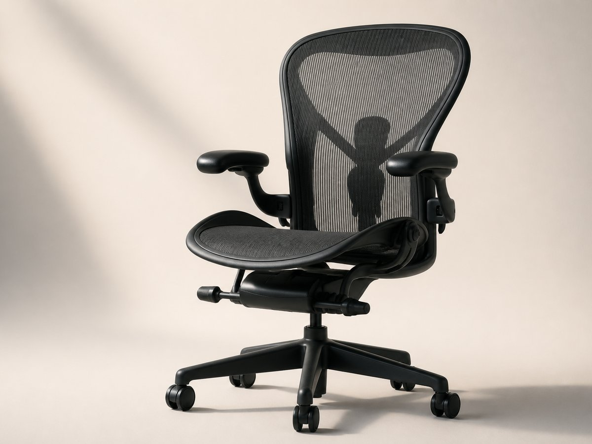
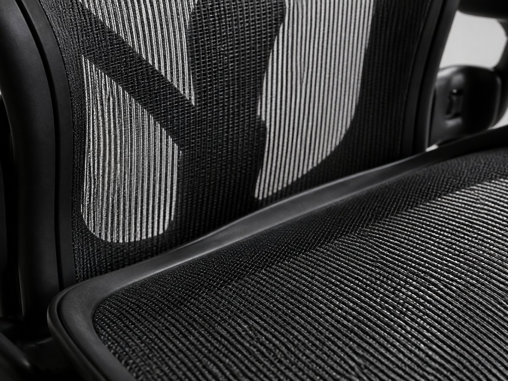
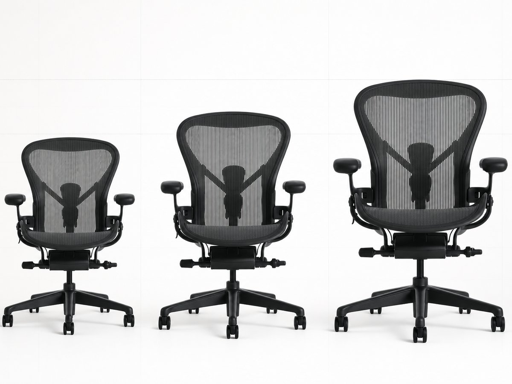
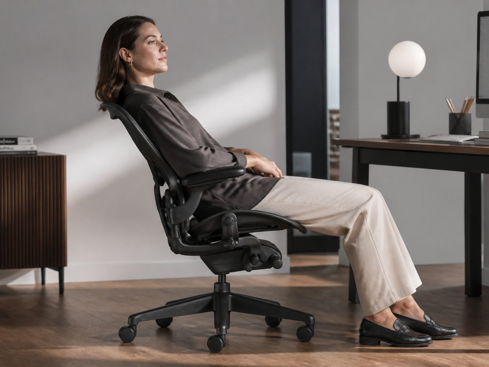
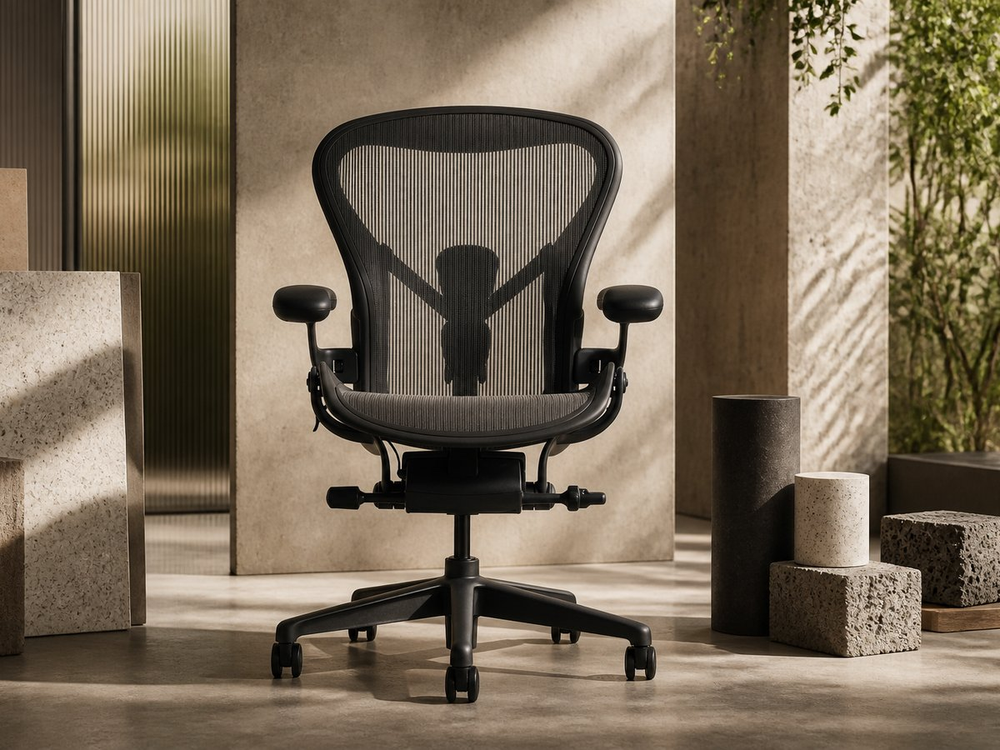
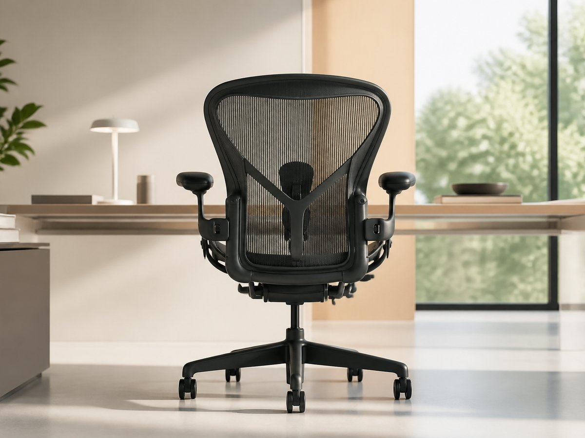

Velikost A
A
Aeron Chair je dostupný ve třech velikostech A, B, C pro postavy zhruba 147 až 198 cm.
Herman Miller Aeron Chair je židle, která se stala ikonou designu i měřítkem ergonomie. Za 49 990 Kč získáte legendární siluetu, prosvětlenou síťovinu a podporu, která obstojí v kanceláři i doma.
Navržena pro dlouhé hodiny soustředění. Udělaná tak, aby vypadala stejně dobře, jako funguje.


Sedák i opěrák z pružné síťoviny 8Z Pellicle s osmi zónami podpory se přizpůsobují tělu tam, kde je to potřeba nejvíc. Výsledkem je rozložení tlaku, lepší opora a pocit lehkosti i při celodenním sezení.
Aeron není měkké křeslo. Je to přesně laděný pracovní nástroj pro záda, páteř a soustředění.

Mechanismus Harmonic Tilt umožňuje plynulé naklánění, které přirozeně reaguje na změnu vaší polohy. Židle vás neblokuje v jedné pozici — podporuje mikro-pohyb, přechody mezi soustředěním, čtením i hovory.
Právě tenhle pocit nenápadné, ale jisté podpory dělá z Aeronu volbu pro lidi, kteří sedí opravdu dlouho.

Aeron je vyrobeno z více než 50 % recyklovaných materiálů a až 91 % je recyklovatelná. Není to jen židle na roky používání — je to promyšlený produkt s menší materiálovou stopou.
Udržitelný přístup tu není doplněk. Je součástí konstrukce i filosofie značky.

12letá záruka potvrzuje, že Aeron není sezónní volba, ale dlouhodobé řešení pro pracovní prostředí, které má fungovat den za dnem.
Když hledáte židli pro profesionální kancelář nebo home office, dává smysl vybírat podle výkonu, odolnosti a jistoty servisu — ne jen podle prvního dojmu.
Vyberte správnou velikost, dolaďte konfiguraci a pořiďte si Herman Miller Aeron Chair jako základ ergonomického pracoviště.
Cena: 49 990 Kč. Ikona designu. Síťovina, která dýchá. Opora, která vydrží.
Vybrat velikost a objednat